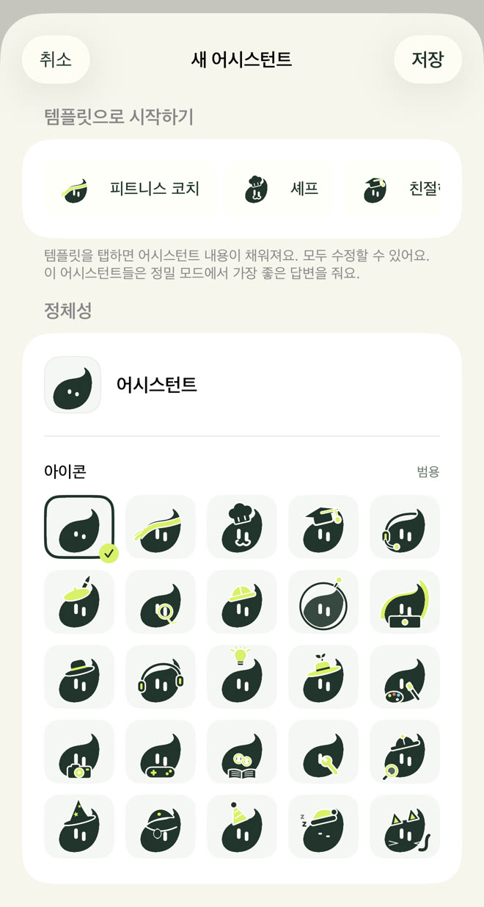
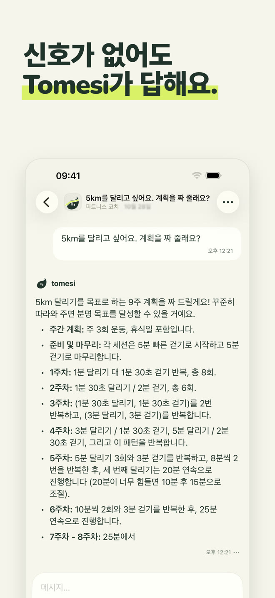
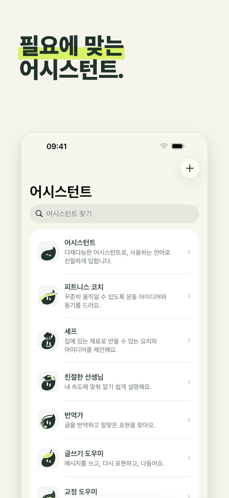
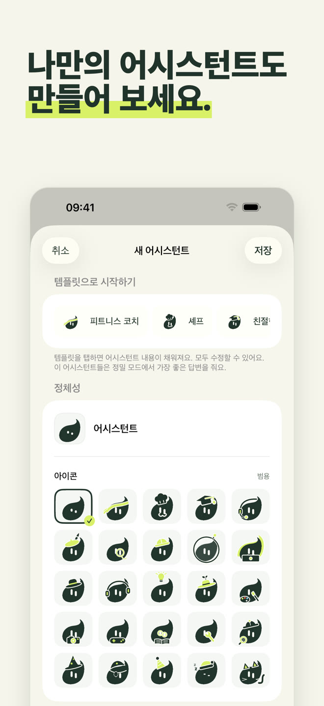
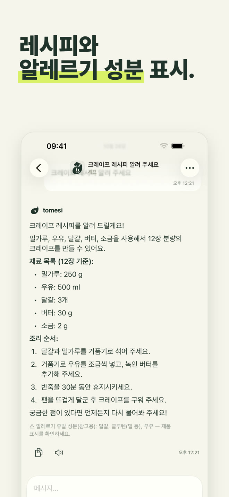
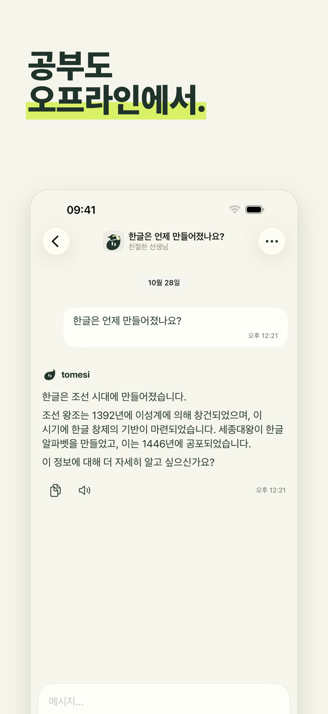
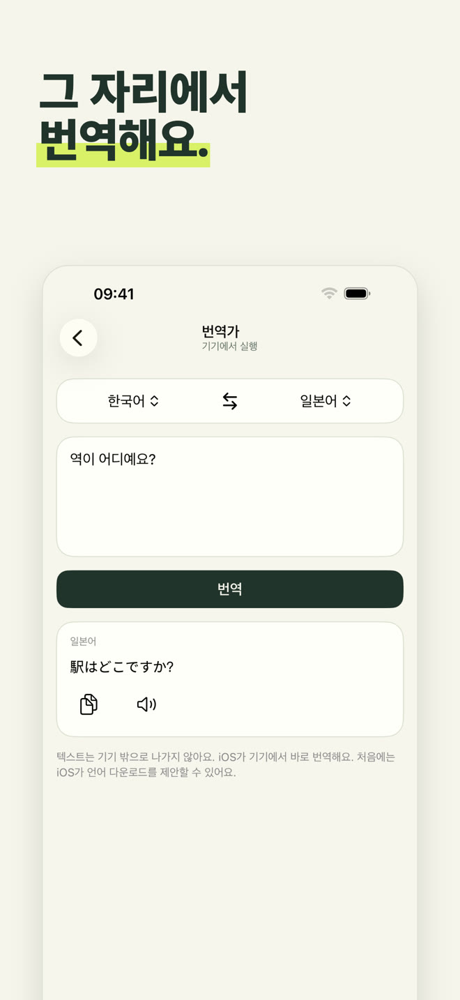
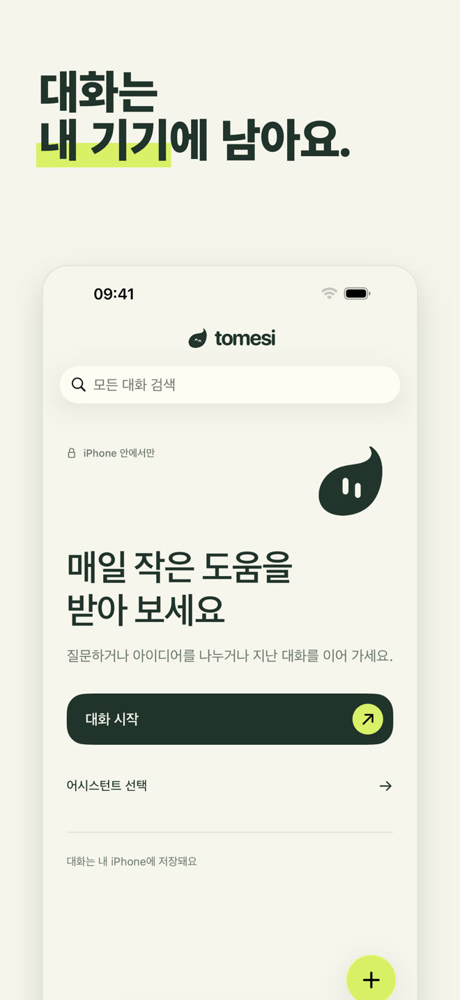

iPhone 안에서만 동작하는 AI 어시스턴트예요. 비행기에서도, 산에서도, 해외에서도. 내가 쓴 내용은 절대 휴대폰 밖으로 나가지 않아요.
App Store에서 다운로드한 번 구매 · 계정 없음 · 구독 없음
어시스턴트마다 역할과 답하는 방식이 달라요. 도움이 되는 어시스턴트를 고르거나, 다재다능한 어시스턴트와 그냥 대화하세요.
다재다능하게, 내 언어로 친절히 답해요.
시간과 장비에 맞춘 운동, 주별 프로그램.
있는 재료로 만드는 간단한 레시피, 알레르기 유발 성분 표시.
내 속도에 맞춰 한 단계씩: 수학, 역사, 과학, 문법.
13개 언어 사이를 그 자리에서 번역해요.
이메일, 메시지, 편지. 맞춤법도 하나하나 고쳐 줘요.
이름과 성격, Tomesi의 픽토그램 25개 중 하나만 고르면 돼요. 직접 만든 어시스턴트도 앱의 자료를 활용해 답해요.

작은 모델이 모든 것을 알 수는 없어요. Tomesi는 검토된 자료를 담고 있다가, 답할 때 어시스턴트에게 건네요.
분량, 단계, 알레르기 유발 성분을 앱이 답변 아래에 보여 줘요.
14개 나라, 그리고 과학, 지리, 14개 언어 문법 자료까지.
65개 가이드도: 몇 주짜리 프로그램, 회복, 식단, 스포츠.
모든 AI처럼 Tomesi도 틀릴 수 있어요. 중요한 정보는 꼭 확인하세요.







AI가 iPhone에 설치돼 있어요. 내가 쓴 내용은 인터넷으로 전송되거나 다른 곳에 저장되지 않아요.
가입도, 이메일도, 광고도 없고, 데이터를 수집하지 않아요.
서버 비용이 없으니 구독도 없어요. 앱은 온전히 내 것이에요.
선택 사항인 정밀 모드는 더 섬세한 답변을 위해 더 강력한 모델(약 3 GB)을 다운로드해요.
네. 앱과 어시스턴트를 설치하고 나면 Tomesi는 더 이상 인터넷이 필요 없어요. AI가 iPhone 안에서만 동작해요. 비행기 모드를 켜고 확인해 보세요.
아무 데도 가지 않아요. 휴대폰에 남아요. Tomesi에는 대화 서버도, 사용자 계정도, 광고도 없어요. 개인정보 처리방침을 확인하세요.
ChatGPT는 서버에서 동작해서 연결이 필요하고, 대화가 서버를 거쳐요. Tomesi는 iPhone 안에서 동작해요. 클라우드 거대 서비스만큼 박식하진 않지만, 언제나 쓸 수 있고 완전히 프라이빗하며 구독도 없어요.
메모리 8 GB iPhone(iPhone 15 Pro 이후)과 iOS 26 이상이 필요해요. 여유 공간 약 3 GB, 선택 사항인 정밀 모드에는 3 GB가 더 필요해요.
네, 모든 AI처럼요. 앱에 담긴 레시피, 역사 연도, 자료는 확인된 것이고 어시스턴트에게 전달돼서 오류가 크게 줄지만, 중요한 정보는 항상 확인하세요.
Tomesi는 13개 언어로 번역돼 있어요(한국어, 영어, 프랑스어, 독일어, 스페인어, 이탈리아어, 네덜란드어, 폴란드어, 포르투갈어, 일본어, 중국어 간체, 러시아어…). 어시스턴트는 더 많은 언어를 이해하고 답해요.
네. MonIA는 이제 Tomesi라는 이름이 되었어요. 이미 구매했다면 다시 살 필요 없이 업데이트만 하면 되고, 대화도 휴대폰에 그대로 남아요.